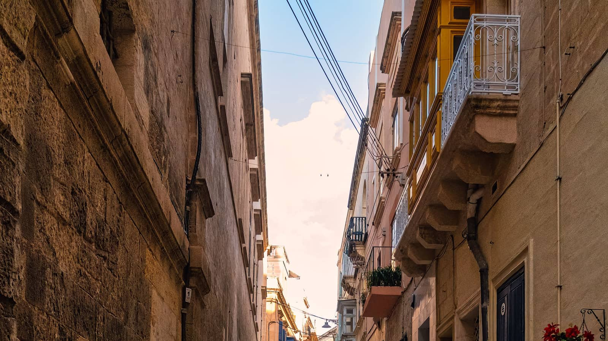

- Start
- Reiseziele
- Malta & Gozo
Reiseziel · Süd-Mittelmeer
Malta & Gozo: kleine Inseln, großes Programm
Nur 2,5 Flugstunden entfernt und trotzdem tiefstes Süd-Mittelmeer: Eine Malta-Pauschalreise packt Kultur, Baden und Tauchen auf zwei Inseln, die zusammen kleiner sind als Bremen. Hier erfährst du, welcher Ort zu dir passt, was Malta wirklich kann (und was nicht) – und welcher 4★-Deal auf Gozo gerade mit −58 % im Kanal liegt.

*Richtwert für Pauschalreisen mit Flug je nach Saison und Abflughafen – tagesaktuelle Preise im Vergleich.
Malta ist die kürzeste Strecke ins Süd-Mittelmeer: Nach rund 2,5 Stunden Flug stehst du auf derselben Breite wie Tunesien – ohne Zeitumstellung, mit Euro in der Tasche und Englisch als Amtssprache. Eines vorweg, weil wir es ehrlich meinen: Malta ist kein klassisches Sandstrand-Ziel. Die Küste besteht überwiegend aus Buchten und Felsplateaus mit glasklarem Wasser, echte Sandstrände sind rar. Dafür bekommst du auf 316 Quadratkilometern mehr Kultur, Geschichte und Tauchreviere als irgendwo sonst im Mittelmeer – und mit Gozo eine zweite, entspanntere Insel gleich dazu.
Welcher Ort auf Malta passt zu dir?
Valletta: die Hauptstadt als Freilichtmuseum
Die komplette Hauptstadt ist UNESCO-Welterbe – auf einer Halbinsel, die du in 20 Minuten zu Fuß durchquerst. Barocke Paläste, die prunkvolle St. John's Co-Cathedral mit ihrem Caravaggio, Festungsmauern über dem Grand Harbour und abends Weinbars in Seitengassen. Hotels in Valletta selbst sind eher klein und boutique-artig; die meisten Pauschalreisenden wohnen anderswo und kommen mit Bus oder Fähre herüber. Für den ersten Malta-Besuch ist mindestens ein voller Valletta-Tag Pflicht – und ein Abstecher ins stille Mdina, die frühere Hauptstadt hoch über der Insel, gleich dazu.
Sliema & St. Julian's: Hotels, Promenade, Ausgehen
Hier spielt das touristische Leben: die meisten 4★- und 5★-Hotels, eine kilometerlange Uferpromenade mit Blick auf Valletta und in St. Julian's die Restaurant- und Nightlife-Meile rund um die Spinola Bay. Gebadet wird auf Felsplattformen mit Leitern ins türkisblaue Wasser – ungewohnt, aber klarer als mancher Sandstrand. Wer zentral wohnen, abends ausgehen und tagsüber flexibel per Bus oder Fähre die Insel erkunden will, ist hier richtig.
Mellieħa: der Norden für Sandstrand-Fans
Wenn Sandstrand, dann hier: Die Mellieħa Bay (Għadira Bay) ist Maltas größter Sandstrand, flach abfallend und damit die familienfreundlichste Ecke der Insel. Der Ort selbst liegt am Hang mit schöner Wallfahrtskirche, in der Nähe locken Golden Bay und Għajn Tuffieħa mit goldgelbem Sand zwischen Klippen. Von hier ist es außerdem nur ein Sprung zur Gozo-Fähre – gute Basis für alle, die beide Inseln sehen wollen.
Gozo: ruhiger, grüner, echter
Die kleine Schwesterinsel ist mit der Fähre ab Ċirkewwa in rund 25 Minuten erreicht und fühlt sich an wie Malta vor 40 Jahren: Terrassenfelder, stille Dörfer, die Zitadelle von Victoria und die Ramla Bay mit rötlichem Sand. Taucher lieben Gozo für Spots wie das Blue Hole bei Dwejra. Wer im Urlaub Ruhe statt Programm sucht, bucht direkt hier – unser aktueller Deal liegt genau auf dieser Insel, Direktflüge und Transfer inklusive.
Comino & Blaue Lagune: der Ausflugsklassiker
Die winzige Insel Comino zwischen Malta und Gozo hat einen einzigen Star: die Blaue Lagune, ein flaches Becken mit karibisch leuchtendem Wasser. Im Hochsommer wird es dort mittags voll – nimm das erste Boot am Morgen oder eine Nachmittagstour, dann hast du das Postkartenmotiv fast für dich. Als Tagesausflug per Boot ab Malta oder Gozo problemlos buchbar.
Die besten Malta-Deals landen zuerst im Kanal.Kostenlos · kein Spam · jederzeit raus
Kanal beitretenBeste Reisezeit für Malta
Malta liegt südlicher als Tunis – entsprechend lang ist die Saison. Von April bis November ist verlässlich Frühlings- bis Sommerwetter, gebadet wird von Juni bis in den Oktober. Selbst der Winter bleibt mit 15–17 Grad mild und ist für Städte- und Kulturtage in Valletta eine unterschätzte (und sehr günstige) Reisezeit. Nur der Hochsommer kann auf den fast baumlosen Inseln richtig heiß werden.
| Monat | Luft | Wasser | Sonnenstunden | Fazit |
|---|---|---|---|---|
| April | 20 °C | 16 °C | 8 | Frühling, ideal für Kultur & Wandern |
| Mai | 24 °C | 18 °C | 10 | Warm, leer, günstig |
| Juni | 28 °C | 22 °C | 11 | Badestart vor den Ferien |
| Juli | 31 °C | 25 °C | 12 | Heiß, Hauptsaison |
| August | 31 °C | 26 °C | 11 | Sehr heiß, Ferienpreise |
| September | 28 °C | 25 °C | 9 | Warmes Meer, wird ruhiger |
| Oktober | 25 °C | 23 °C | 7 | Preis-Tipp |
| November | 21 °C | 20 °C | 6 | Mild, ideal für Sightseeing |
Alle Werte sind ca.-Angaben. Der Herbst ist Maltas heimliche Bestzeit: Im Oktober hat das Meer noch 23 Grad, die Sommerhitze ist vorbei und die Hotelpreise fallen spürbar. Genau deshalb liegt unser aktueller Gozo-Deal Ende Oktober – Badewetter zum Nebensaison-Tarif.
Preise & Spartipps: Was Malta kosten darf
Als Richtwert je nach Saison und Abflughafen: 7 Nächte im 4★-Hotel mit Frühstück und Flug kosten meist 500–750 € pro Person. All Inclusive ist auf Malta die Ausnahme und selten sinnvoll – die Wege sind kurz, und Essen gehen gehört hier zum Urlaub. Im Mai, Juni und Oktober rutschen gute Häuser oft ans untere Ende der Spanne, im Juli und August liegt Malta darüber. Geprüfte Deals unterbieten die Richtwerte teils deutlich: Unser aktueller 4★-Deal auf Gozo kostet 533 € für 5 Nächte inklusive Direktflug und Transfer.
- Frühstück statt All Inclusive buchen: Pastizzi vom Bäcker, Fischrestaurants in Marsaxlokk, Weinbars in Valletta – wer auf Malta nur im Hotel isst, verpasst die halbe Insel und zahlt trotzdem mehr.
- Nebensaison nutzen: Mai/Juni und Oktober liefern Sommerwetter zu Preisen, die oft 25–40 % unter dem August liegen – bei identischem Hotel.
- Gozo statt Sliema prüfen: Hotels auf der kleinen Schwesterinsel sind meist günstiger und ruhiger – achte darauf, dass der Fähr-Transfer im Paket enthalten ist.
- Bus statt Mietwagen fahren: Das Busnetz erschließt die ganze Insel für ein paar Euro am Tag. Falls doch Mietwagen: vorab vergleichen und an den Linksverkehr denken.
- Endpreis rechnen, nicht Lockpreis: Gepäck, Transfer und Zuschläge machen aus manchem Schnäppchen einen Normalpreis – worauf du achten musst, zeigt unser Ratgeber zu versteckten Kosten.
Direkt aus dem Kanal
Aktueller Malta-Deal aus dem Kanal
Geprüft am 30. Juli 2026: 4★ Grand Hotel Gozo (8,0/10 bei 109 Bewertungen) – 5 Nächte im Doppelzimmer mit Frühstück, Direktflüge und Transfer inklusive, Beispieltermin 25.–30.10.2026 ab München.
Den Buchungs-Link zu diesem Deal gibt es im WhatsApp-Kanal – dort posten wir ihn zusammen mit allen Details, solange das Kontingent verfügbar ist. Der Termin ist bewusst gewählt: Ende Oktober badest du auf Gozo noch bei rund 23 Grad Wassertemperatur, zahlst aber schon Nebensaison-Preise – und die Fähr-Überfahrt ist im Paket bereits drin.
Selbst vergleichen
Malta-Pauschalreise zum Bestpreis
Abflughafen, Zeitraum und Verpflegung eingeben – der Rechner vergleicht die Malta- und Gozo-Angebote der großen Veranstalter tagesaktuell.
Häufige Fragen zu Malta
Gibt es auf Malta Sandstrände?
Ja, aber weniger als anderswo im Mittelmeer – das sagen wir ehrlich. Die größten Sandstrände sind die Mellieħa Bay (Għadira Bay) im Norden Maltas, die Golden Bay an der Westküste und die Ramla Bay auf Gozo mit ihrem rötlichen Sand. Der Rest der Küste besteht aus Felsbuchten und Badeplattformen mit glasklarem Wasser. Wer eine Woche nur am Sandstrand liegen will, ist auf Mallorca oder Zypern besser aufgehoben – Malta punktet mit der Kombination aus Baden, Kultur und kurzer Anreise.
Malta oder Gozo – wo buche ich mein Hotel?
Malta ist die richtige Wahl, wenn du Programm willst: Valletta, Ausgehen in St. Julian's, Sehenswürdigkeiten und kurze Transferwege vom Flughafen. Gozo ist ruhiger, grüner und ländlicher – ideal für Taucher, Wanderer und alle, die abschalten wollen. Die Fähre zwischen den Inseln braucht nur rund 25 Minuten, ein Tagesausflug auf die jeweils andere Insel ist also immer drin. Viele Pauschalreisen nach Gozo haben den Fähr-Transfer bereits inklusive.
Wann ist die beste Reisezeit für Malta?
Die Hauptsaison läuft von April bis November. Baden kannst du verlässlich von Juni bis Oktober – das Meer hat im Oktober noch rund 23 Grad. Preislich am klügsten sind Mai, Juni und der Oktober: Sommerwetter ohne Ferienpreise und ohne die Hitze des Hochsommers. Und selbst der Winter ist mit 15 bis 17 Grad mild genug für Sightseeing in Valletta – dann sind die Hotels am günstigsten.
Kommt man auf Malta ohne Mietwagen aus?
Ja, besser als in den meisten Urlaubsländern. Das Busnetz der Malta Public Transport verbindet ab Valletta praktisch jeden Ort der Insel, Tages- und Wochenkarten sind günstig. Plane nur Zeit ein – die Busse nehmen jede Ortsdurchfahrt mit. Wer doch selbst fahren will: Auf Malta herrscht Linksverkehr, und die Straßen sind eng. Am ehesten lohnt ein Mietwagen auf dem ruhigeren Gozo.
Für wen lohnt sich eine Malta-Pauschalreise?
Für alle, die Meer und Programm kombinieren wollen: Kultur-Fans (drei UNESCO-Welterbestätten auf kleinstem Raum), Städte-Entdecker, Taucher – Malta gilt als eines der besten Tauchreviere Europas – und alle, die nur kurz fliegen möchten. Auch praktisch: Englisch ist Amtssprache, du kommst überall durch. Weniger geeignet ist Malta für reine Strand- und Poolurlauber, die täglich kilometerlangen Sand erwarten.
Weiterlesen
Zypern
Die schönsten Sandstrände des östlichen Mittelmeers und Badeurlaub bis in den November.
Zum Reiseguide ReisezielKreta
Griechenlands größte Insel: Traumstrände wie Elafonissi, Tavernen-Kultur und kurze Flugzeit.
Zum Reiseguide RatgeberBeste Reisezeit: Wann wohin?
Der Monats-Kalender: welches Ziel wann Wetter und Preis am besten kombiniert.
Zum RatgeberKleine Inseln, schnelle Deals
Malta-Deals zuerst im Kanal
Gute Malta-Deals wie der 533-€-Knaller oben sind oft nach wenigen Stunden vergriffen. Im WhatsApp-Kanal bekommst du sie, sobald wir sie geprüft haben – kostenlos und ohne Spam.